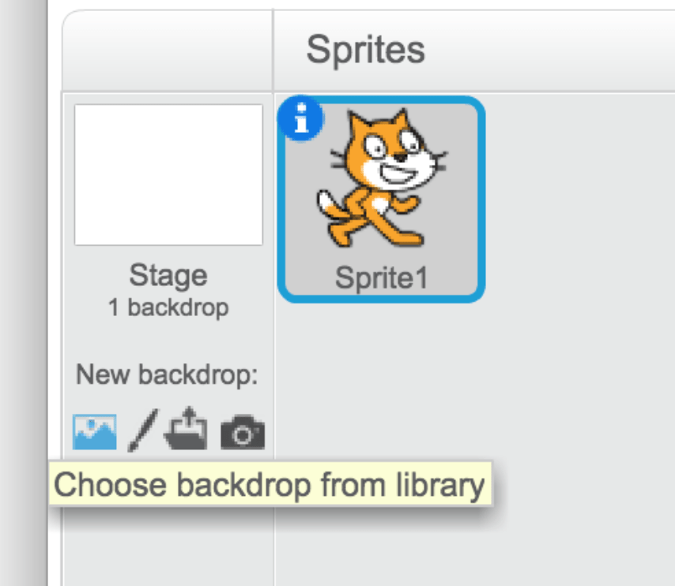
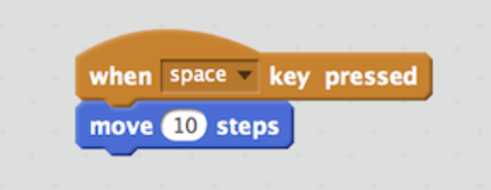
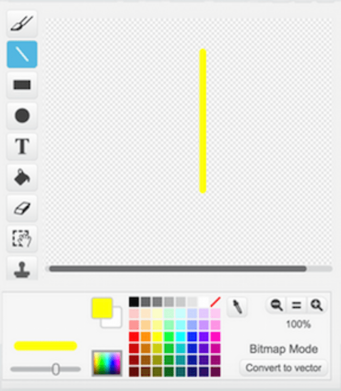
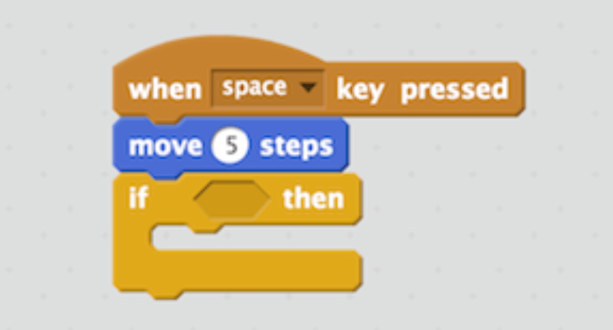
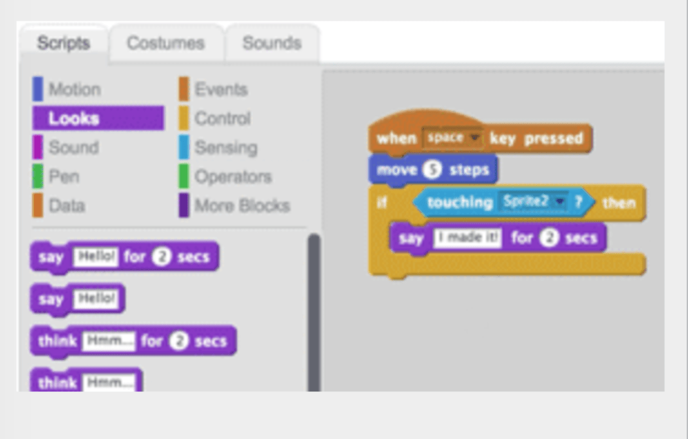
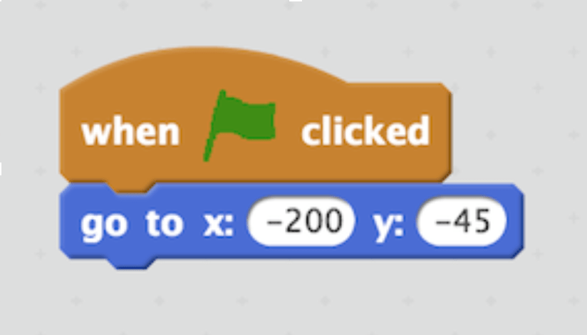

Week 2
Overview
Go to the Scratch website - https:// scratch.mit.edu/ - and click the TRY IT OUT link (look for the green circle at the top left). This should take you to Scratch’s project editor interface.
New projects begin with a white Stage and a single cat-costumed sprite. You can add new sprites by clicking the icon next to the words “New sprite”.
Each sprite in your project has its own scripts, costumes, and sounds.
Along with thumbnails for your sprites, the Sprite List also shows a thumbnail of the Stage to the left. The Stage has its own set of scripts, images, and sounds. The background image you see on the Stage is called a backdrop. When you start a new project, the Stage defaults to a plain, white backdrop, but you can add new ones.
Activity 1: Let's Say Hello
Challenge: Make the cat say “Hello!” when clicked.
- In the “Scripts” tab, select “Events”
- Find “When this sprite is clicked” and drag it to the box on the right
- Select the “Looks” menu
- Select “Say hello for 2 secs” and drag it into the box on the right so it attaches to the first block
- Click the cat and watch him say “Hello!”
- Show Kyle when you're done!
Activity 2 - Let’s Dance!
Challenge: Make the cat dance!
- From the Motion pallet, drag the “Move” block to the script area. (Note: If you click the single instruction and watch the stage area. The cat will move right.)
- From the Control pallet, drag the “Wait” block to the script area.
- From the Motion pallet, drag the”Move” block to the script area.
- Change the move block to -10 by clicking into the white space.
- Combine (put together) all of the blocks in the script area.
-
It should look like this:
 Click the block of instructions and watch the stage area. The cat will move right and then wait for one second and then the cat will move left.
Click the block of instructions and watch the stage area. The cat will move right and then wait for one second and then the cat will move left.
- Duplicate (copy) these commands to make the cat dance right-left three times. Combine (put together) these commands into a single block. To copy the commands, right click on the block and select “Duplicate”
- Show Kyle when you're done!
Activity 3 - Let’s Race!
Activity 3: Get out your running shoes!
- Choose a backdrop for the race. 
- Start moving. Click on the cat to select it. Drag a “Move” block from the Scripts into the box on the right. Click on the box to make the cat move.
- Click the “Events” category. Drag out a “when this key pressed” block and snap it on top of the “move” block you just added.  Now the cat will move every time you press the spacebar!
- Let’s draw the finish line. Click the paintbrush icon. Then, click on the line tool. Select a color. 
- Now you can drag your finish line to wherever you want it.
- Click to highlight the cat sprite.
- Click on the “Scripts” tag.
- Click the “Control” category and drag out an “if” block. Snap it onto your script. It should look like this: 
- Click the “Sensing” category and drag a “touching” block. Insert it into the “if” block.
- Choose “Sprite2” (the name of the finish line) from the pull-menu.
- Make something happen when your cat crosses the finish line. Click the “Looks” category and drag out a “say” block. 
- To make the starting point - drag your sprite to where you want it to start.
- Click the “Motion” category, drag a “Go to x y” block into the Scripts area.
- Click the “Events” category, drag a “When flag clicked” block and snap it on top. 
- Now, when you click the green flag, the cat will go to its starting point.
- Add another character to the race! Choose a new sprite. Click the icon next to the words “New sprite”.
- Code the new sprite like you did the first one, but choose a different point to start.
- Start the race!!